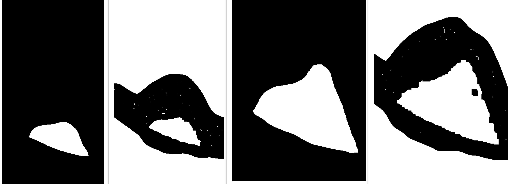
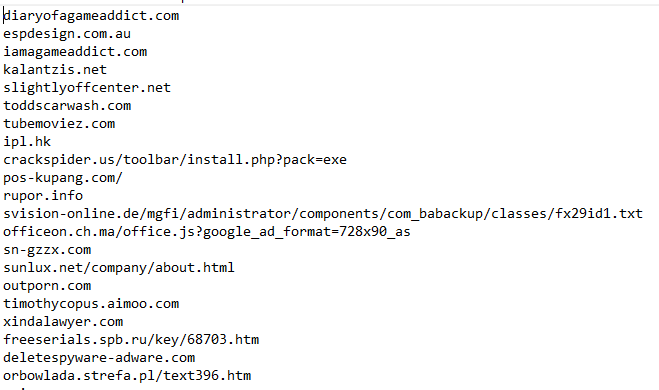
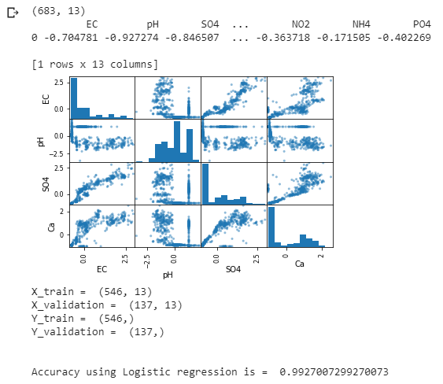

My Work Experience :
Analyst at Deloitte USI
I am currently working as an Analyst at Deloitte USI.
TableTennis Coach For AECS Nationals
I was the coach of AECS Indore team for the AECS Nationals 2015.
My team didnt make it but
2
players from the team were in top 8 in individuals.
Official for All Indian Major Port Championships
Worked as an official for All Indian Major Port Championships held at Mangalore 2018.
List Of Projects :
1. Reinforcement Learning in Segmentation of fluid in OCT-Scanned Retinal Images
A combination of Reinforcement learning algorithm and Thresholding algorithm to segment the sub-retinal fluid from the OCT-Scanned retina images.
2. Invalid URL filtration using Machine learning
Used various machine learning algorithms to detect whether a link is valid or invalid. Fiddler tool is used for creating the dataset which is used for catching the network traffic between the device and the server.
3. Taxi_V3 using Reinforcement Learning
Solving Taxi_v3 puzzle with the help of Q-Learning agent.

4. Water Contamination Detection using Machine Learning
Detecting whether water sample is potable or not based on the ratio of chemical parameters present in the water sample.
